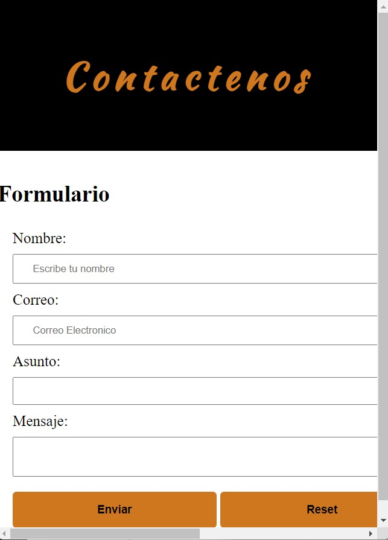
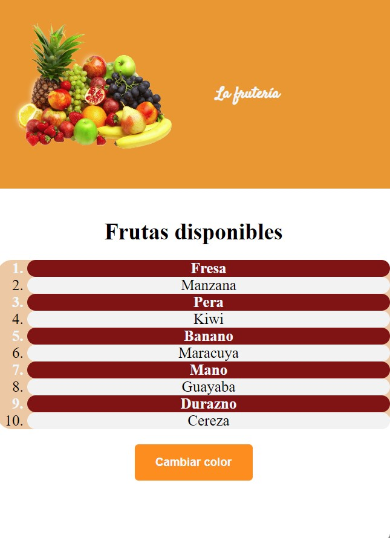
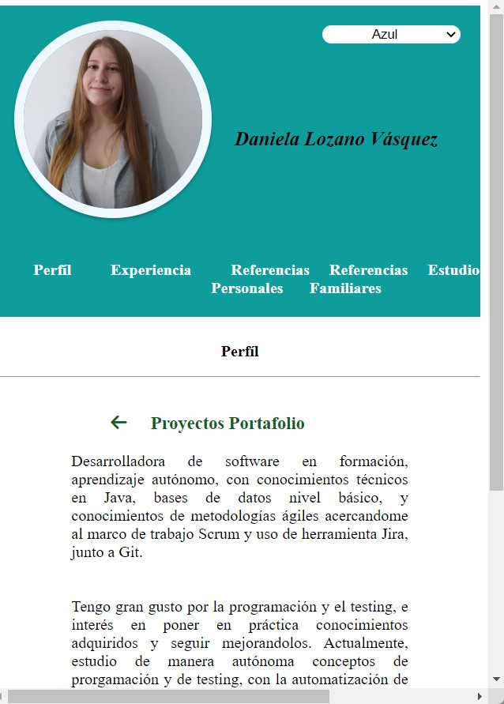

Proyecto JavaScript

1. Crear una página web el cual contenga un formulario de contáctenos. Dicho formulario debe de llevar los siguientes campos: Nombre de quien escribe el mensaje, correo de quien escribe el mensaje, asunto del correo, mensaje del correo. No olvide poner un botón para enviar, el cual, deberá imprimir en consola la información capturada en dicho formulario y otro botón para resetear todo el formulario, este último botón debe de funcionar correctamente. Si el formulario al enviarse no tiene todos los datos completos, por favor sacar una alerta donde le diga al usuario qué datos hacen falta.
Ver codigo, punto 1. Ver Resultados.
2. Crear una lista ordenada de 10 frutas, las que usted desee, debe de aplicar dos temas de colores seleccionables y aplicables a la página web. El primer tema deberá seleccionar de color diferente al habitual los elementos pares, el segundo tema deberá resaltar del color anterior los elementos impares de la lista ordenada.
Ver codigo, punto 2. Ver resultados.
Este es un proyecto que muestra la hoja de vida en navegador, usando solo la propiedad de HTML con CSS, y JavaScript.
Debe tener los siguientes requisitos:
- Crear 3 temas de colores para toda su hoja de vida y permitir cambiar dichos temas por medio de alguna serie de botones o como usted lo crea pertinente.
A continuación un ejemplo guía

- En su hoja de vida deberá crear algo parecido a lo que se llama un efecto de acordeón, por favor tenga muy presente que no debe usar ninguna librería o framework externo. Esto debe ser aplicado en las páginas de:
Experiencia laboral
Referencias personales
Referencias familiares
Estudios realizados
Ejemplo de lo que se espera sin el efecto de animación